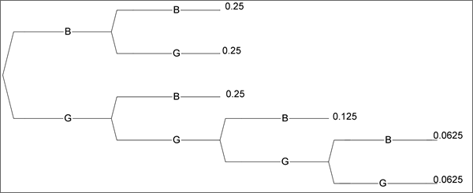

Discrete distributions
A discrete distribution describes the randomness of a situation in which a discrete numerical measurement is made. This discrete measurement is usually a whole number (count) and is called a discrete random variable.
Each possible value is associated with a probability and, since it is impossible to simultaneously record two different values (i.e. the values are mutually exclusive), the probabilities must sum to 1.
The probabilities may be described in a table or with a mathematical formula.
TrustUs second hand car dealership
TrustUs is a second hand car dealership. Here are sales records from the last 500 business days.
| Number of cars sold | 0 | 1 | 2 | 3 | 4 | 5 | 6 |
| Number of days | 25 | 125 | 150 | 100 | 50 | 25 | 25 |
Let X be the number of cars sold in one day. The variable X is discrete, because it can only take on discrete (separate) whole numbers. Based on these sales records, X has the following probability distribution.
| x | 0 | 1 | 2 | 3 | 4 | 5 | 6 |
| P(X = x) | 0.05 | 0.25 | 0.30 | 0.20 | 0.10 | 0.05 | 0.05 |
The probabilities here are empirical, calculated from relative frequency (25/500 = 0.05, etc). The notation P(X = x) means the probability that X (the number of cars sold in a day) is equal to whatever “x” is.
Other probabilities
From the probability distribution, we can obtain other probabilities using the ordinary rules of probability.
TrustUs second hand car dealership
What is the probability that no cars are sold in a day?
P(X = 0) = 0.05
What is the probability that fewer than 3 cars are sold in a day?
P(X < 3) = P(X = 0) + P(X = 1) + P(X = 2) = 0.05 + 0.25 + 0.30 = 0.60
Investment fund return
The return from an investment fund depends on the future state of the economy. The investment manager has come up with the following probabilities (subjective?) according to whether the economy has strong growth, weak growth, nil growth or negative growth. The variable X in this table is the return in $M.
| x | 6 | 4 | 2 | 0 | -2 |
| P(X = x) | 0.05 | 0.20 | 0.40 | 0.20 | 0.15 |
What is the probability that the fund makes a profit?
P(X > 0) = P(X = 6) + P(X = 4) + P(X = 2) = 0.05 + 0.20 + 0.40 = 0.65
What is the probability that the return is between one and five million dollars?
P(1 < X < 5) = P(X = 4) + P(X = 2) = 0.20 + 0.40 = 0.60
Boys and girls in a family
A couple plan their family as follows. They want at least two children and no more than four. However, subject to this constraint on their total number of children, they will stop when they get a boy.
Assuming that there are no multiple births and the probability of any child being male is 1/2, independent of the genders of previous children, the following tree diagram represents the possible sequences of births.

From this, we can determine the distribution of the number of girls in the family, X.
| x | 0 | 1 | 2 | 3 | 4 |
| P(X = x) | 0.25 | 0.5 | 0.125 | 0.0625 | 0.0625 |
Note that there are two branches in the tree diagram that result in one girl being born.